P01: Señales en Tiempo Continuo
INTEGRANTES:
- Aleks Adrián Calderón Vázquez
- Carlos Josafath López Favila
- Fredy Bautista Dominguez
- Irvin Adrián Vázquez Ruíz
- Iván Rodrigo Santacruz Bravo
Contents
- OBJETIVOS
- INTRODUCCIÓN
- DESARROLLO DE LA PRÁCTICA
- 1. Reproducir la sección 1.11 del libro de Lathi (versión de clase).
- 2. Resuelve el problema 1.2-2 usando las herramientas del paso anterior.
- 3. Resuelve el problema 1.11-1, los ejes deben mostrarse en el origen además de la edición de tu preferencia.
- 4. Construye la grafica de
- 5. Resuelve el problema 1.11-3
- 6. Construya una app que permita (consultar los ejemplos preconstruidos)
OBJETIVOS
- Manipulación básica de MATLAB
- Gráficas de señales reales y complejas continuas
- Transformación de señales continuas (escalamientos y traslaciones)
- Cálculo de energía y potencia de señales continuas
INTRODUCCIÓN
CÓDIGO DE LAS SIGUIENTES GRÁFICAS EN COLAB

DESARROLLO DE LA PRÁCTICA
1. Reproducir la sección 1.11 del libro de Lathi (versión de clase).
MATLAB: Working with Functions
1.11-1 Funciones Anónimas Para crear una función en MATLAB igualamos el nombre de la función con un @ y entre paréntesis la variable independiente de la función, seguida de la señal que se representará por la función anónima:
f = @(t) exp(-t).*cos(2*pi*t);
Damos un valor a t y evaluamos f con el valor de t.
t = 0; f(t)
ans =
1
Si creamos un vector con distintos valores y evaluamos la función con dicho vector, obtendrémos otro vector de la misma dimensión con los valores obtenidos de evaluar la función con el vector. Ejemplo:
t = (-2:2); % creamos un vector con valores enteros desde -2 hasta 2
f(t)
ans =
7.3891 2.7183 1.0000 0.3679 0.1353
El comando plot() grafica el resultado de la evaluación, con valores de f(t) contra los de t.
plot(t,f(t)); xlabel('t'); ylabel('f(t)'); grid;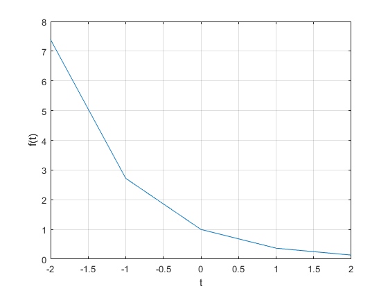
Con los pocos valores que obtuvimos en el vector de t, la gráfica creada no es tan exacta. Normalmente para funciones oscilatorias, graficar entre 20 y 200 puntos por oscilación es adecuado. En este caso ocupamos 100 puntos, por lo que el vector de t tendrá una dimensión de 1x100.
t = (-2:0.01:2);
La función es evaluada y graficada nuevamente con los 100 valores del vector t:
plot(t,f(t)); xlabel('t'); ylabel('f(t)'); grid;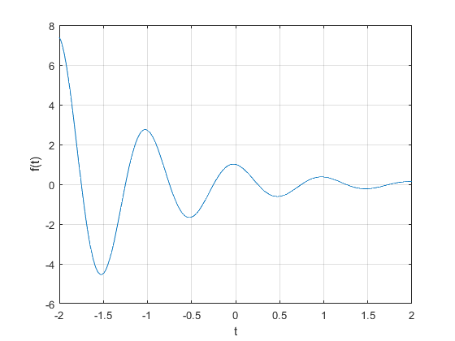
Operadores Relacionales y la Función del Paso Unitario
En MATLAB, un operador relacional compara dos elementos. Si la comparación es verdadera, se devuelve un verdadero (1) lógico. Si la comparación es falsa, se devuelve un falso lógico (0). A veces llamadas funciones indicadoras, los operadores relacionales indican si una condición es verdadera. La función de Paso Unitario ya está definida usando el operador menor o igual que:
u = @(t) 1.0.*(t>=0);
Cualquier función que tenga una discontinuidad, como el paso unitario, será dificil de graficar. Por ejemplo si graficamos con pocos puntos:
t = (-2:2); plot(t,u(t)); xlabel('t'); ylabel('u(t)');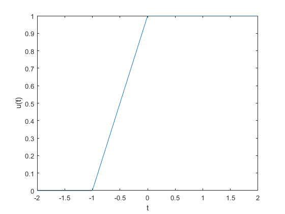
MATLAB conecta los datos de las gráficas con lineas por lo tanto no parece haber una discontinuidad en t=0. es por eso que se ocupan muchos más valores a la hora de realizar la gráfica. Tabién se ajustan los límites de graficación de la gráfica, para poder ver con mayor campo de visión la gráfica.
t = (-2:0.01:2); plot(t,u(t)); xlabel('t'); ylabel('u(t)'); axis([-2 2 -0.1 1.1]);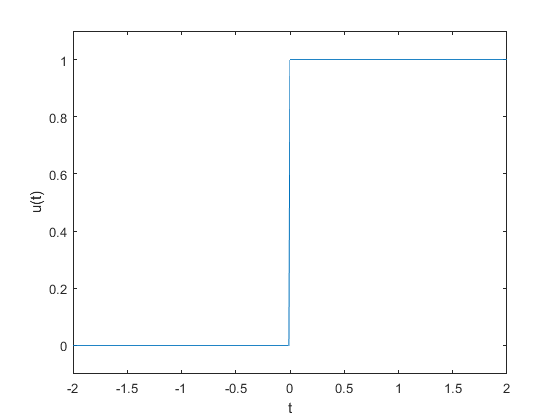
La función axis tiene como argumento un vector de 4 elementos, a los que la función lee como: valor mínimo en x, valor máximo en x, valor mínimo en y, y por último, valor máximo en y: axis([xmin xmax ymin ymax]).
Los operadores relacionales pueden ser combinados usando AND, OR y NOT lógicos:
p = @(t) 1.0.*((t>=0)&(t<1)); t = (-1:0.01:2); plot(t,p(t)); xlabel('t'); ylabel('p(t) = u(t)-u(t-1)'); axis([-1 2 -.1 1.1]);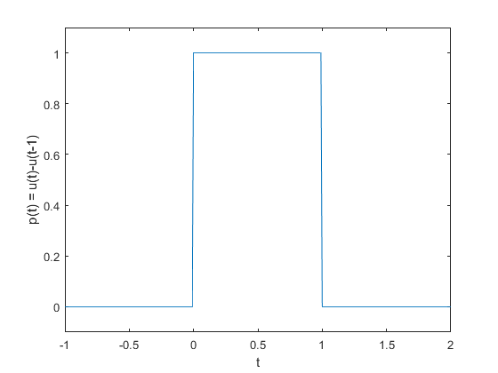
En la función anónima p estamos graficándo el valor de p(t)=1 entre los valores de t mayor o igual a 0 y menor que 1.
Visualización de Operaciones en la Variable Independiente
Es común encontrar distintas operaciones en las señales como lo son las traslaciones y los escalamientos y las funciones anónimas de MATLAB nos ayudan a su estudio. Considerando la señal:
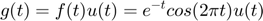
que es una versión causal de f(t), es fácil de representar con una función anónima de MATLAB.
g=@(t) f(t).*u(t);
También es posible realizar operaciones combinadas. En este ejemplo haremos un escalamiento horizontal y una traslación horizontal: g(t)=(2t+1) y la graficaremos para comparar con la función original g(t).
t=(-2:0.01:2); plot(t,g(2*t+1)); xlabel('t'); ylabel('g(2t+1)'); grid;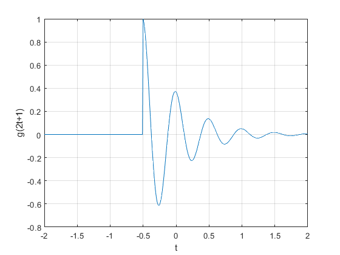
Ahora graficaremos g(-t+1) que es una traslación horizontal y una inversión respecto al eje vertical:
plot(t,g(-t+1)); xlabel('t'); ylabel('g(-t+1)'); grid;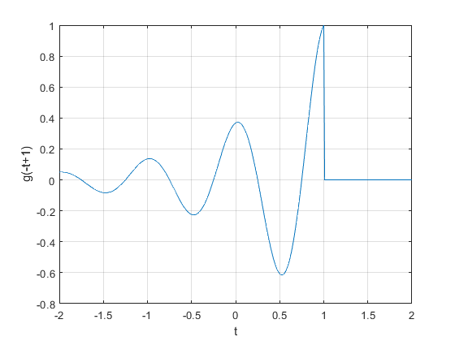
Y finalmente haremos una suma de las dos funciones anteriores que darán lugar a una nueva función h(t). h(t)=g(2t+1)+g(-t+1)
plot(t,g(2*t+1)+g(-t+1)); xlabel('t'); ylabel('h(t)'); grid;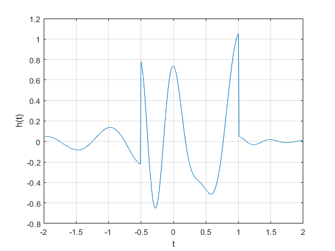
1.11-4 Integración Numérica y Estimación de la Energía de una Señal
Para calcular la Energía de una Señal necesitamos realizar una integral del cuadrado de las señales. Para facilitar y agilizar estos cálculos podemos realizar este cálculo en MATLAB por medio de la integración numérica.
Considerando la señal:
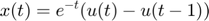
su energía se calcula como:
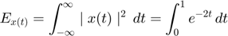
Calculandola por integración numérica con MATLAB:
x = @(t) exp(-t).*((t>=0)&(t<1));
con un 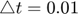 creamos el vector t:
t=(0:0.01:1);
El resultado del cálculo usando el comando sum() es:
E_x=sum(x(t).*x(t)*0.01)
E_x =
0.4367
El resultado no es correcto, pero disminuyendo 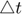 la aproximación mejorará
Matlab tiene una función que aplica una mejor técnica de integración numérica llamada cuadratura de Simpson adaptativa recursiva. Para hacerlo, ocupamos quad() que requiere una función, un límite inferior de integración, un límite duperior de integración. No necesitamos especificar
x_squared = @(t) x(t).*x(t); E_x = quad(x_squared,0,1)
E_x =
0.4323
Estas mismas técnicas son ocupadas para estimar la energía de una señal compleja. Considere la señal g(t) que ya se definió anteriormente. Su energía se describe como:
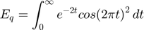
y una solución muy cercana es calcularla con MATLAB:
g_squared = @(t) g(t).*g(t);
Aunque el límite de integración superior es hasta el infinito, la exponencial decae hasta tener valores efectivos de cero mucho antes de 100. Por lo tanto el límite inferior de la suma será t=100 y 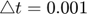
t = (0:0.001:100); E_g = sum(g_squared(t)*0.001)
E_g =
0.2567
Y calculando E_q con quad():
E_g = quad(g_squared,0,100)
E_g =
0.2562
Podemos notar que ambas soluciones son muy parecidas o casi iguales.
DRILL 1.21 Computing Signal Energy with MATLAB
Usa MATLAB para confirmar que la energía de la señal h(t), definida por h(t)=g(2t+1)+g(-t+1), es 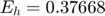
Si ocupamos
h=@(t) g(2*t+1)+g(-t+1); t=(-100:0.001:100); h_squared=@(t) h(t).*h(t); E_h=sum(h_squared(t)*0.001) % Con el comando sum() E_h=quad(h_squared,-100,100) % Con el comando quad()
E_h =
0.3776
E_h =
0.3768
2. Resuelve el problema 1.2-2 usando las herramientas del paso anterior.
Para la señal x(t) de la Fig. P1.2-2 grafica lo siguiente:
% _*Grafica de la funcion x(t)*_ u = @(t) 1.0.*(t>=0)+0.0.*(t<0); f = @(t) -t.*(u(t+4)-u(t)); g = @(t) t.*(u(t)-u(t-2)); h = @(t) -t.*(u(t+4)-u(t))+t.*(u(t)-u(t-2))+0.*(t<-4 & t>-2); t = (-7:0.01:7); plot(t,h(t)); plano = gca; plano.XAxisLocation = "origin"; plano.YAxisLocation = "origin"; grid on; xlim([-6,4]); ylim([-1,5]);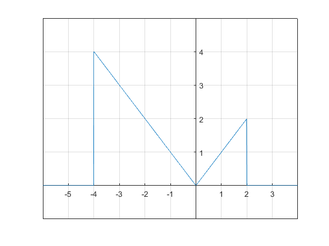
(a) x(t-4)
plot(t,h(t-4)); plano = gca; plano.XAxisLocation = "origin"; plano.YAxisLocation = "origin"; grid on; xlim([-2,8]); ylim([-1,5]);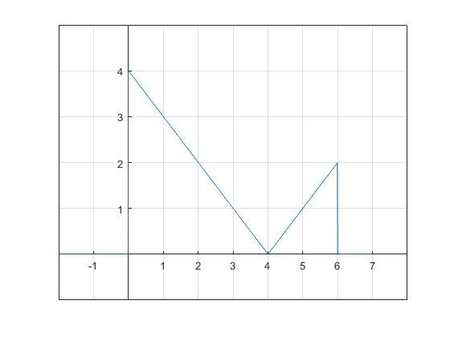
(b) x(t/1.5)
plot(t,h(t/1.5)); plano = gca; plano.XAxisLocation = "origin"; plano.YAxisLocation = "origin"; grid on; xlim([-7,4]); ylim([-1,5]);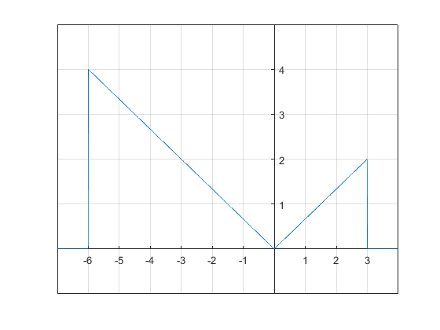
(c) x(-t)
plot(t,h(-t)); plano = gca; plano.XAxisLocation = "origin"; plano.YAxisLocation = "origin"; grid on; xlim([-4,6]); ylim([-1,5]);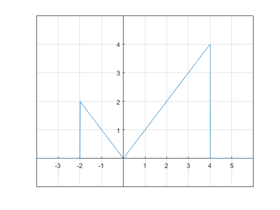
(d) x(2t-4)
plot(t,h(2*t-4)); plano = gca; plano.XAxisLocation = "origin"; plano.YAxisLocation = "origin"; grid on; xlim([-1,4]); ylim([-1,5]);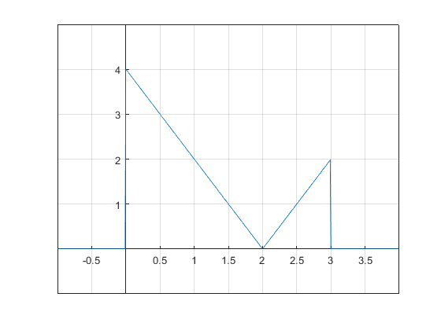
(e) x(2-t)
plot(t,h(2-t)); plano = gca; plano.XAxisLocation = "origin"; plano.YAxisLocation = "origin"; grid on; xlim([-2,8]); ylim([-1,5]);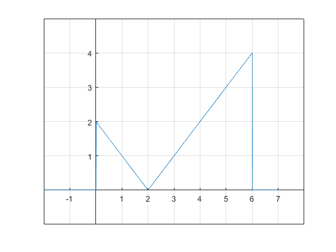
3. Resuelve el problema 1.11-1, los ejes deben mostrarse en el origen además de la edición de tu preferencia.
Proporcione el código y la salida de MATLAB que tracen la porción impar x0(t) de la función 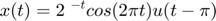
syms t; X1=(2^-t)*cos(2*pi*t)*heaviside(t-pi); X2=subs(X1,t,-t); Ximpar=(X1-X2)/2; fplot(Ximpar,[-3*pi 3*pi],'r'); grid on; title('Problema 1.11-1'); ylabel('x_0(t)'); xlabel('t');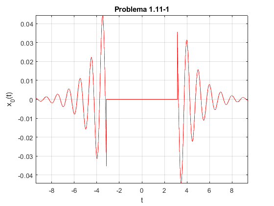
4. Construye la grafica de
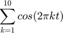
clc; clear; syms t; X=0; for i=1:10 X=X+cos(t*2*pi*i); end subplot(2,2,1); fplot(X,[-2 2],'g'); title('x(t) de -2 a 2'); ylabel('x(t)'); xlabel('t'); grid on; plano = gca; plano.XAxisLocation = "origin"; plano.YAxisLocation = "origin"; grid on; subplot(2,2,2); fplot(X,[-0.2 0.2],'r'); title('x(t) de -0.2 a 0.2'); ylabel('x(t)'); xlabel('t'); grid on; plano = gca; plano.XAxisLocation = "origin"; plano.YAxisLocation = "origin"; grid on; subplot(2,2,3); fplot(X,[0.3 0.7],'k'); title('x(t) de 0.3 a 0.7'); ylabel('x(t)'); xlabel('t'); grid on; plano = gca; plano.XAxisLocation = "origin"; plano.YAxisLocation = "origin"; grid on; subplot(2,2,4); fplot(X,[0 1],'b'); title('x(t) de 0 a 1'); ylabel('x(t)'); xlabel('t'); grid on; plano = gca; plano.XAxisLocation = "origin"; plano.YAxisLocation = "origin"; grid on; clc;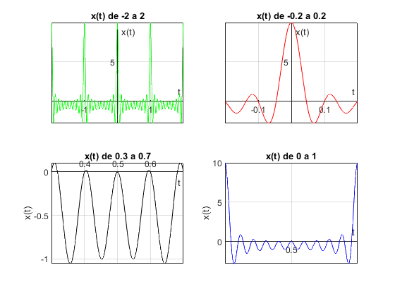
5. Resuelve el problema 1.11-3
Defina x (t) = (e^t (1 + j2π))* u (−t) y y (t) = Re ( 2x( −5 − t)/ 2) . (a) Use MATLAB para graficar Re {x (t)} versus Im {x (at)} para a = 0.5, 1 y 2 y −10≤ t ≤10. ¿Qué importancia tiene el factor de escala en la forma de la figura resultante? (b) Utilice MATLAB para graficar y (t) sobre −10≤t≤ 10. Determine analíticamente el tiempo t0 donde y (t) tiene una discontinuidad de salto. Verifique su cálculo de t0 usando la gráfica de y (t). (c) Utilice MATLAB y la integración numérica para calcular la energía Ex de la señal x (t). (d) Utilice MATLAB y la integración numérica para calcular la energía Ey de la señal y (t). (e) Utilice MATLAB para graficar x (t) sobre −10≤t≤ 10
clc; clear; syms t; X=exp(t*(1+2*pi*j))*heaviside(-t); Y=real(2*subs(X,t,(-5-t)/2)); x_t=matlabFunction(X); y_t=matlabFunction(Y); % A) Grafica la parte real de x(t) vs la parte imaginaria de x(at) t=linspace(-10,10,100); for i=1:3 switch i case 1 a=0.9; case 2 a=1; case 3 a=2; end figure ; plot(real(x_t(t)),imag(x_t(a.*t))); grid on; xlabel('real(x(t))'); ylabel('imag(x(at))'); end %B) Gráfica de y(t) de -10 a 10 figure; plot(t,y_t(t),'g'); title('y(t) vs t'); ylabel('y(t)'); xlabel('t'); grid on; %c) Energia de x(t) clear t syms t; Ex=int((real(X)^2)+(imag(X)^2),t,-inf,inf); Ex %d) Energia de y(t) Ey=int(Y^2,t,-inf,inf); Ey %Gráfica de y(t) de -10 a 10 t=linspace(-10,10,100); plot3(real(x_t(t)),imag(x_t(t)),t,'r'); title('x(t) vs t'); ylabel('imag(x(t))'); xlabel('real(x(t))'); zlabel('t'); grid on; %
Ex = 1/2 Ey = 2/(4*pi^2 + 1) + 2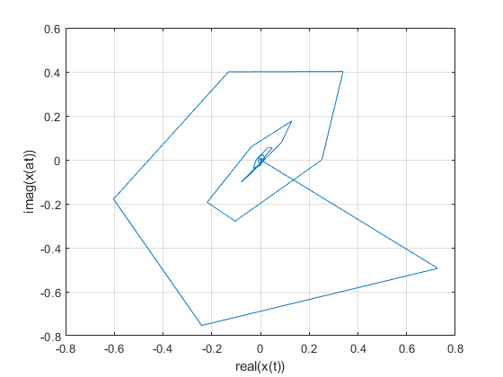 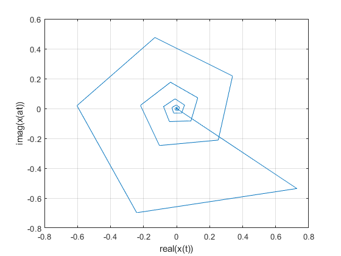 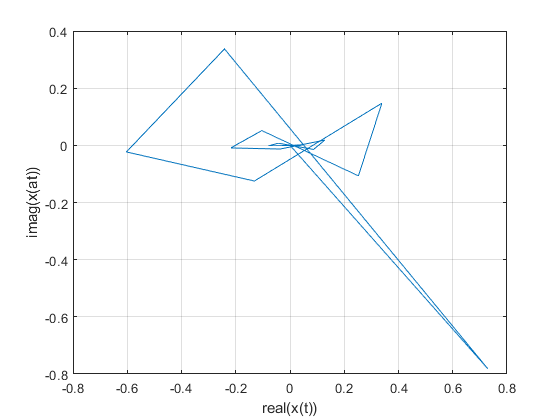 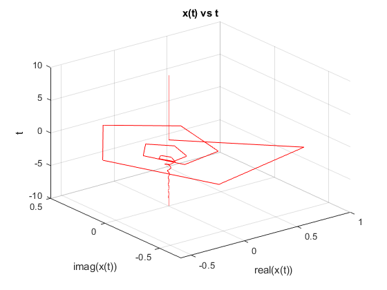
6. Construya una app que permita (consultar los ejemplos preconstruidos)
- Gráficar señales en tiempo continuo reales, el usuario ingresa la definición de la señal en el formato especifico
- El usuario puede definir el intervalo de la gráfica
- El usuario puede seleccionar el tipo de transformación (horizontal, vertical o combinación) que desee realizar a la señal, la app deberá mostrar la gráfica de esta transformación.
Con la ayuda de la Interfaz AppDesigner que ofrece Matlab se creo una App que es capaz de graficar una señal real en tiempo continuo con las limitaciones de escritura que tiene Matlab en si.
NOTA.- La aplicación está en el archivo .zip cargado pero como se le adjuntaron imágenes es necesario adjuntarlas para que le corra sin problemas Imágenes de la Aplicación